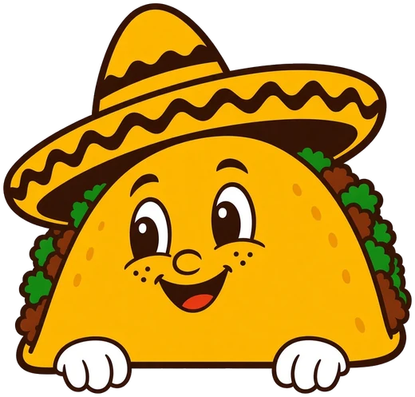

Área de comida
Las taquerías de Autlán y la región, reunidas en un mismo lugar. ¿Con cuál empiezas?

Domingo
29
Noviembre
29 de noviembre · 1:00 pm
Entrada
gratuita
La feria
Ven a probar el sabor de las mejores taquerías de Autlán de Navarro y de municipios cercanos. La decisión más difícil será con cuál empezar.
¡Nos vemos entre tacos, salsa y buena compañía!
Programa
Las taquerías de Autlán y la región, reunidas en un mismo lugar. ¿Con cuál empiezas?
Grupos musicales en vivo e invitados especiales.
Line-up por anunciar
Tradición y color para acompañar cada taco.
Actividades durante la feria. Pronto compartiremos el programa completo.
Directorio
Taquerías de Autlán y la región se dan cita para que descubras tu próximo favorito.
Muy pronto anunciaremos la lista
Estamos confirmando a las taquerías participantes. Vuelve pronto para conocerlas.
¿Tienes una taquería? SúmateDónde
El punto ideal para la Feria del Taco: amplio, accesible y el lugar donde tradicionalmente se reúne la comunidad.
Su ubicación céntrica facilita la llegada de familias y visitantes, ofrece espacios seguros para stands y actividades, y mantiene viva la costumbre de convivir en la plaza, como se ha hecho desde siempre.
Cargando mapa…
El mapa está tardando en cargar.
Verlo en Google Maps
Tu sazón merece llegar a más personas. Conoce lo que incluye tu lugar y cómo participar.